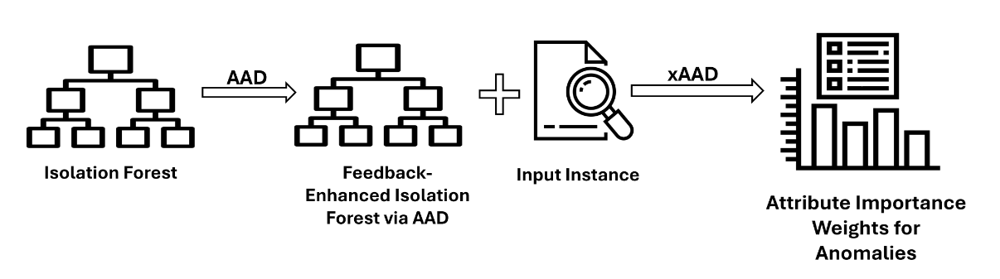
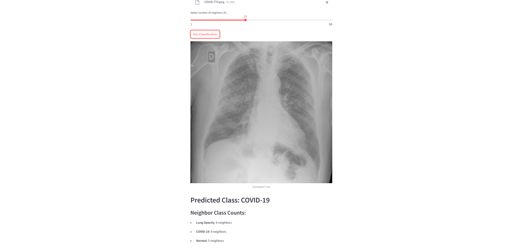
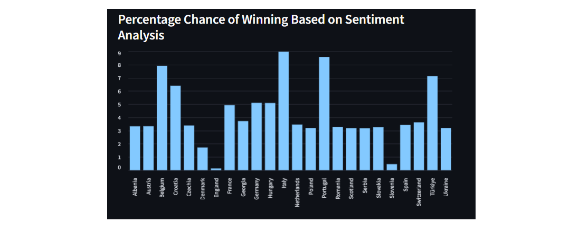
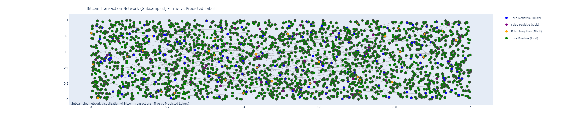
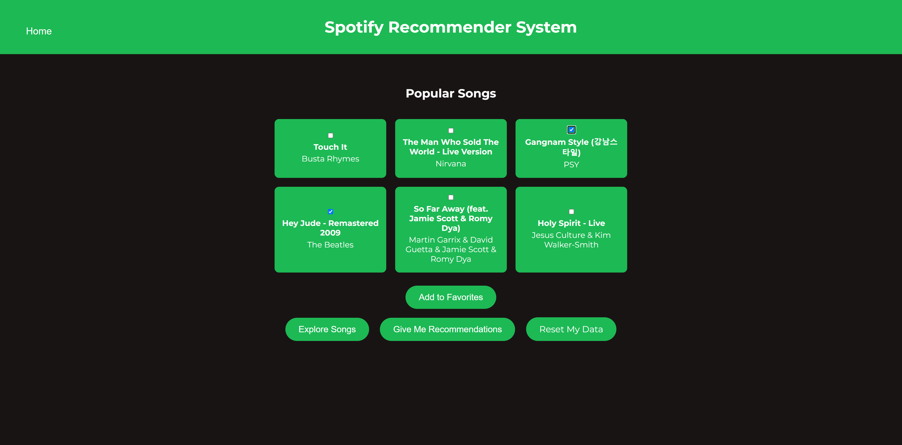
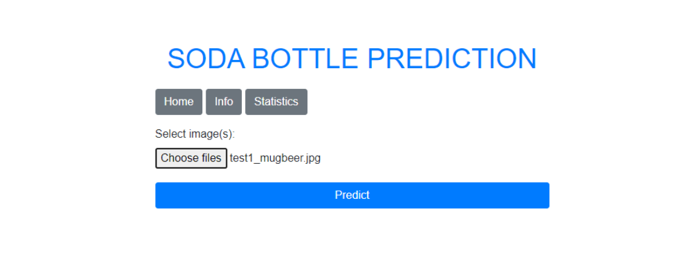
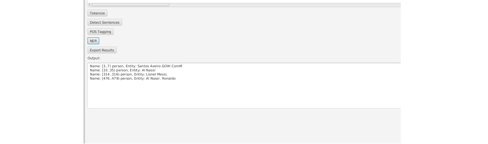
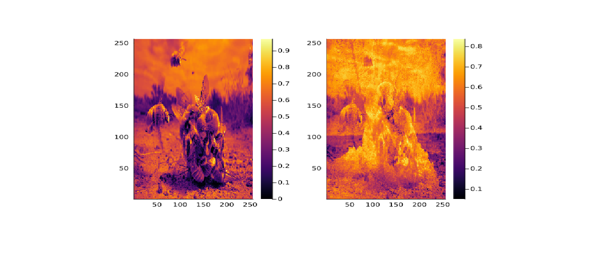
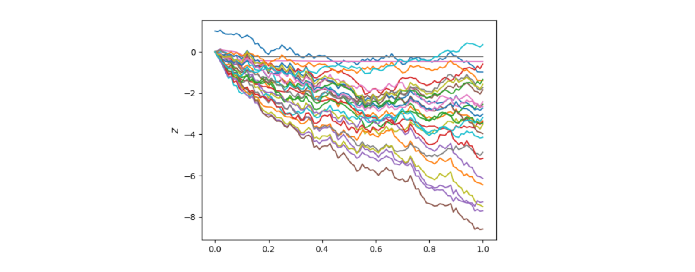
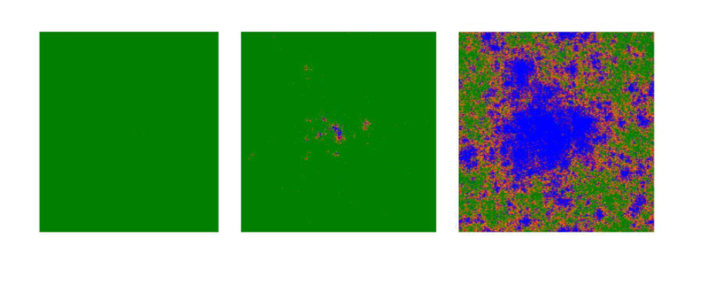

Machine Learning Engineer | Data Scientist | AI Researcher
The serious part:
A trilingual Machine Learning Engineer with hands-on experience in developing and fine-tuning algorithms for various industries, including finance, AI, and energy. Skilled in applying machine learning techniques like transformers, NLP, and graph neural networks to solve real-world problems. Proficient in Python, C++, and other programming languages, with a strong background in mathematics and data science, supported by degrees from top EU universities. Known for improving efficiency, automating tasks, and delivering practical solutions that save costs and add value. Experienced in both research and real-world applications, with a solid track record of successful projects and publications.
The human part:
When I’m not coding, you can probably find me reading (I read all kinds of stuff), learning languages (not immediately useful for SWE, but I’m pretty sure it tickles the creative part of your brain that indirectly helps), running (ran a marathon while doing my internship at Citigroup), or playing tennis (still improving :/). I also often think about when I’ll have time to get back to playing my piano and guitar (there’s also an idea to create a generative AI tool for music production—I still have to learn a few more things first, though).
xAAD - Post-Feedback Explainability for Active Anomaly Discovery
This paper introduces a novel approach that enhances the interpretability and accuracy of anomaly detection systems by integrating Active Anomaly Discovery (AAD) with the Isolation Forest algorithm and the Assist-Based Weighting Scheme (AWS) explainability metric. Published in IEEE Access, December 2, 2024.
Medical Image Classification for Lung X-rays
This web app classifies lung X-ray images into categories such as COVID-19, Lung Opacity, Normal, and Viral Pneumonia. It uses a pre-trained ResNet50 model for feature extraction and Annoy for approximate nearest neighbors (ANN) search, enabling fast similarity-based classification. Built with a Streamlit interface for interactive image uploads and adjustable neighbor settings.
Forecasting EURO 2024 with News & NLP
This project leverages advanced Natural Language Processing (NLP) techniques to predict outcomes for UEFA Euro 2024 by analyzing football news from prominent sources like L'Équipe, FourFourTwo, Kicker, La Gazzetta dello Sport, and Marca. The project includes web scraping, sentiment analysis, and nation classification. It also features an interactive Streamlit dashboard that visualizes sentiment and prediction data, providing insights into team performances and public sentiment.
Bitcoin Fraud Detection with Graph Neural Networks
This project focuses on detecting fraudulent Bitcoin transactions using Graph Convolutional Networks (GCNs) and the Elliptic dataset. A hybrid approach combines C++ for efficient data preprocessing and Python (PyTorch Geometric) for implementing and training the GCN model. Achieved a 96% accuracy rate in detecting fraud using this method.
Spotify Recommender App with Kaggle Data
A Flask-based web application that provides personalized song recommendations using cosine similarity and RBF similarity. It integrates with Redis for caching and Docker for deployment, allowing users to explore songs, receive tailored recommendations, and add songs to a favorites list.
Computer Vision for Soda Bottles
A deep learning project applying transfer learning to recognize soda bottle brands using a fine-tuned Xception model. The system achieves a 94% accuracy rate, leveraging the Kaggle Cola Bottle Identification Dataset. It also includes a FastAPI interface for image uploads and predictions, allowing users to interact with the model via a web interface.
Java ML Text Processor
A Java-based NLP application that uses Apache OpenNLP and JavaFX to provide a GUI for text processing. The app performs tokenization, sentence detection, part-of-speech tagging, and named entity recognition (NER), with the ability to export processed text. It’s designed as an educational tool for interacting with basic NLP techniques.
Julia Image Autoencoder
This project uses Flux.jl in Julia to build an autoencoder for compressing and decompressing images. The system processes batches of images, compresses them into a lower-dimensional space, and reconstructs them with minimal loss. The project focuses on learning compact image representations, with examples of original and reconstructed images included.
Master's Thesis
Reimplemented a machine learning time-series forecasting technique with randomized dimensionality reduction at Technical University of Munich (TU Munich). Investigated reservoir computing with the signature of a path, applied the Johnson-Lindenstrauss lemma for dimensionality reduction, and expanded a proof linking controlled differential equations and signature dynamics to enhance the efficiency of high-dimensional time-series data analysis.
Bachelor's Thesis
Developed a C++ model using stochastic methods to simulate the spatial spread of diseases, inspired by the COVID-19 outbreak, at Ludwig Maximilian University of Munich (LMU Munich). The work explores spatial SEIR models and the impact of different intervention strategies.
